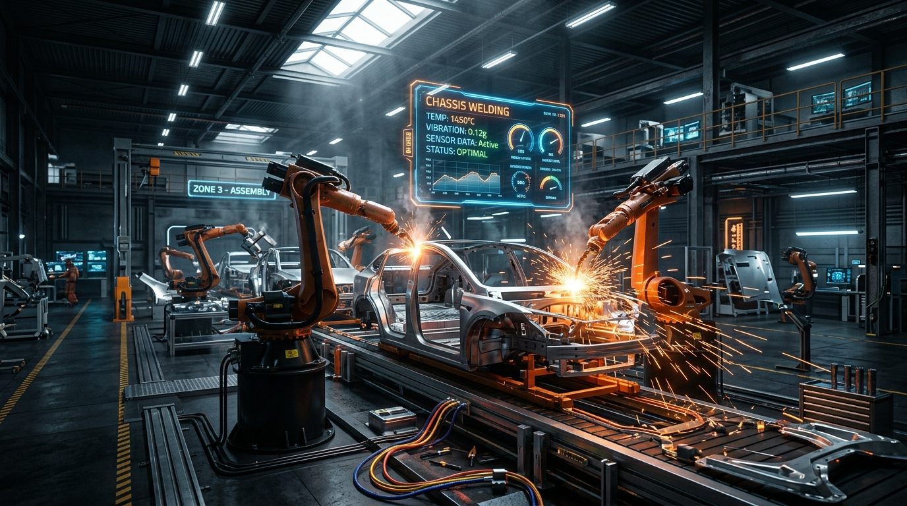
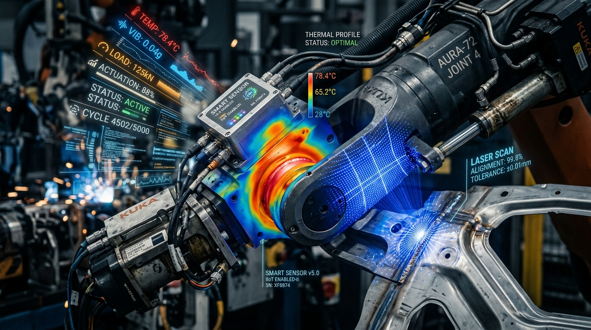
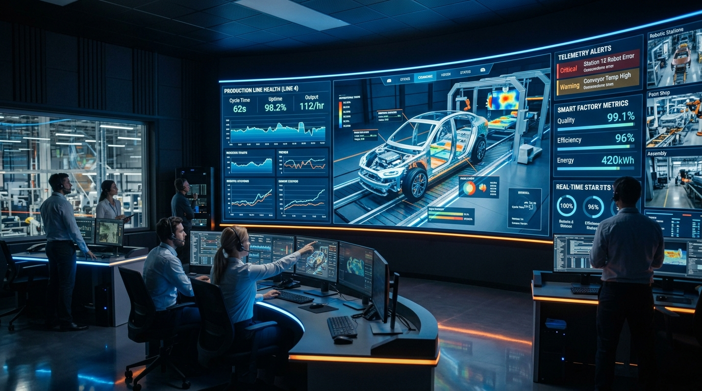

A high-reliability plant operations command center that continuously ingests multi-station robotics telemetry, evaluates thermal and vibration physics in real time, and synthesizes autonomous root-cause remedies via Google Gemini AI.


Attainment = (Production Actual / Production Target) × 100%

| Layer | Core Technology | Key Modules / Libraries | Benefit Delivered |
|---|---|---|---|
| Frontend UI | React 19 & Vite 7 | Wouter, Radix UI Primitives, Lucide Icons | Sub-second HMR, modular SPA architecture, zero lag |
| Styling System | Tailwind CSS v4 | Glassmorphism, tw-animate-css, Responsive Grids | Curated industrial plant-floor aesthetic with dark mode |
| Data Viz | Recharts | ResponsiveContainer, AreaChart, BarChart | Real-time telemetry trend graphs and takt time gauges |
| Backend API | Node.js & Express 5 | Modular Intelligence Engines, RFC-4180 Parser | High-throughput streaming intake of 50MB telemetry datasets |
| Artificial Intel | Google Gemini 1.5 Flash | REST API, Temperature 0.2, Structured JSON Schema | Autonomous root-cause mechanical reasoning & technician commands |
| Database & Auth | Supabase (PostgreSQL) | Tables: machines, alerts, telemetry; Supabase Auth | Secure JWT authentication and cloud persistence |
| High Availability | Drizzle ORM & MemoryStore | In-memory seed fallback + Circuit Breaker pattern | 100% operational uptime if database or internet is offline |
Empowering plant operators, quality engineers, and maintenance crews with autonomous real-time intelligence, deterministic physics safety, and zero-downtime reliability.
Open for Questions & Discussion